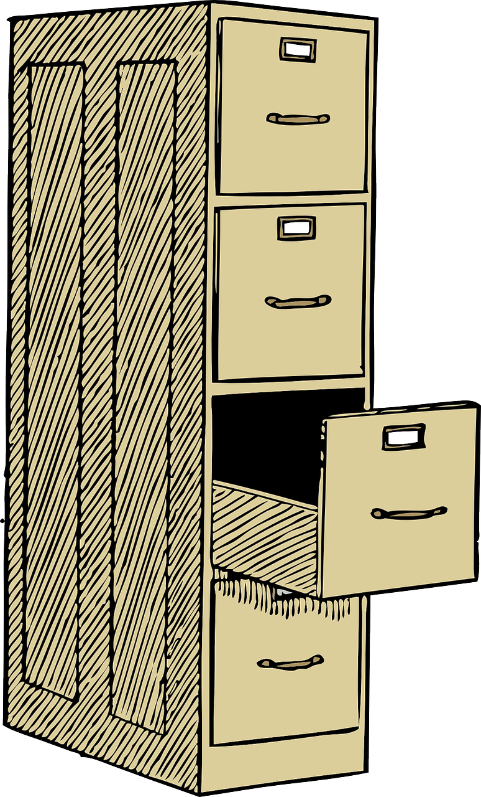

2 + 2[1] 4sqrt(16) # take the square root[1] 4Why am I in this course?
Why do I need to learn this stuff?
The goal of this course is not to make perfect little replicas of our thinking.
Instead we aim to give you some tools to approach data analysis.
Most of life is not about following instructions; it is about navigating ambiguity.
There is almost always more than one way to do things in this course.
How do I make decisions when things aren’t clear? and is that the way I want to be making them?
Data analysis is the process of inspecting, cleansing, transforming, and modeling data with the goal of discovering useful information, informing conclusions, and supporting decision-making. (wikipedia)
{height = 6in}

Descriptive:
What happened?Diagnostic:
Why did it happen?Predictive:
What might happen in the future?Prescriptive:
What should we do about it?We will be using the programming language R for our data analysis
R is the language
R studio is the graphical user interface (GUI)

If you have not installed R and R studio on your computer please see the resources page on Stream and studyguide material about how to do that.
Without R, it would take hours each day to manage data in the best case scenario. In a worst case scenario, it could take the entire day looking at data and fixing mistakes from cutting and pasting. Trying to remember what order you pressed buttons in last time or where the button moved to now that the software has updated. None of this is accounting for the cost of accessing any of the proprietary software.
Advantages of R
Learning any skill from scratch is going to be challenging at first.
R is no exception.
You must consistently practice R in order to retain any information.
Making mistakes is part of learning. We learn a lot from failure.
R basicsR is case sensitive, so data is not the same as DATA
Similarly beware of spaces and punctuation, particularly in column header
<- (read as “gets”) is the assignment operator. That is, you use <- to assign some content to a variable. The operator = has a slightly different meaning but it can be used in the same way as <-.
Comments are denoted by the # symbol. Anything after a # symbol is ignored by R . This is a great way to write yourself notes.
R basicsR coding can be hard to write from scratch. So do not hesitate to adopt R codes written by others. Search the internet for R code to do what you want to do. The usual copy and paste trick works!
Warnings vs error messages: R gives warnings typically in orange and errors in red. A warning means your code likely ran but there is something you should be aware of while an error means your code did not run. We recommend first trying to understand what the error is saying, check for common mistakes (missing failing to close a bracket or quotation, misspelling, capitalization, etc. ), then try to google your error message.
At the most basic level R is a calculator.
We can type mathematical equations directly into R.
2 + 2[1] 4sqrt(16) # take the square root[1] 4In R, we work with objects. There are different classes of objects including:
character, integer, numeric, vector, matrix, array, data.frame, list, lm (linear model).
An object may belong to several classes at once.
Understanding the data type is essential for knowing what you can
Suppose that your data consists of 4 numbers say 1 to 4. We can combine these numbers using the c() function namely c(1,2,3,4) and then assign it to x, an object.
x <- c(1,2,3,4)Evidently x is a vector and also belongs to other classes of objects. This can be queried as follows:
is(x)The main class it belongs to is queried as
class(x)Our data are actually integers and arranged in a pattern. So we can define x as follows:
x <- 1:4The colon (:) operator created the desired pattern. Alternative expressions include
x <- seq(1, 4, by=1)Try is(x) and class(x) and check whether our data are recognised as integer class.
We can do many mathematical manipulations on x. Try
mean(x)
min(x)
max(x)
sum(x)
sd(x)
var(x)
sort(x, T)
trunc(x/2)Vector elements are accessed by square brackets, []. Try
x[2]+x[4]
x[2:3]
x[c(1,3)]
x[-2]Assume that our data are actually categorical codes. Then the correct way of defining the character data is to use single quotes as
x <- c('a', 'b', 'c', 'd')Now try Try is(x) and class(x). For large patterned categorical data, placing quotes is laborious. So we can change the class as follows:
x <- as.character(1:4)Assume that you have two batches of data. The first one is
x <- 1:4 and the second one is
y <- c('a', 'b', 'c', 'd')These two batches can be combined into a matrix as follows:
m <- cbind(x,y)Here the matrix m is formed by binding the columns (vectors). The other option is to bind as rows
m <- rbind(x,y)Evidently vectors must be of the same length for these commands to work. We can also form a matrix by splitting a vector. Try
x <- 1:6
m <- matrix(x, byrow = TRUE, ncol = 3)
m <- matrix(x, byrow = TRUE, ncol = 2)To access the first of row of the matrix m, we use m[1,]; to access the first column of m, we use m[,1].
A data frame is an R object that contains vectors; the vectors are stored vertically in a matrix like structure, and can be referred to by the name of the column. The main advantage of a data frame is that the variables in a data frame do not all need to be the same type; e.g. some variables can be of class numeric, and some variables can be of class character. We can create a data frame object using the data.frame() function. This data frame contains two small vectors, the first of which is named ID, and the second NAME. Try
x <- 1:4
y <- c('a', 'b', 'c', 'd')
my.data <-data.frame(ID=x, NAME=y)
my.data We can access the original vector of interest in the following way:
my.data$NAMEThere are times when it is useful to convert a data frame into a matrix; we can do this with the as.matrix() function.
m <- as.matrix(my.data)Type class(m) and see the changes.
Two data frames can also be merged into a single data frame using the merge command.
The internal structure of an R object can be viewed using the diagnostic function str().
Directories are a location for storing files on your computer. Information (documents) is stored in folders the location of that folder is called a directory. You can think of this as the address of the file.


This full address of the file is also called a path.
For example on my computer my slides for this class are located in a folder called ‘slides’ inside ‘Data_Analysis_course’. The last part of the path is the most specific folder which is nested inside parent folders.
In RStudio, set the working directory under the Session menu. It is a good idea to start your analysis as a new project in the File menu so that the entire work and data files can be saved and re-opened easily later on.
getwd() # check your working directory[1] "/Users/mmarraff/Documents/Classes/161.250/Data_Analysis_Course/slides"# setwd() # if you know the directory you want R to look inThis course will be using Quarto *.qmd files rather than raw *.R files.
Quarto is the successor to Rmarkdown.
Quarto files contain text and code, and can be ‘Rendered’ to produce a nicely formatted document, usually in HTML or PDF format, containing sections, text, code, plots, and output. Quarto can also be used to make websites; in fact, the website for this course was made using Quarto.
Here’s some information to get you started: https://quarto.org/docs/get-started/hello/rstudio.html.
And some other useful tips: https://r4ds.hadley.nz/quarto.
Most data sets we shall consider in this course are in a tabular form. This means that each variable is a column, each row is an observation, columns are separated by white space (or comma), and each column or row may have a name.
If the data file is stored locally, you should put the data into the same directory as your Quarto or R markdown script. That way, you can (usually) load it easily without having to type the full pathway (e.g., mydata.csv rather than C:/Users/anhsmith/Work/Project1/data/mydata.csv).
You can also load data from the web using a URL. For example,
rangitikei <- read_csv("https://www.massey.ac.nz/~anhsmith/data/rangitikei.csv")We usually store the data in an R object, here named rangitikei.
The letters after the . at the end of a files name are called the extension and tell you the type of file.
“comma separated values” (.csv) : read.csv() or read_csv() function to load the file.
text file (.txt): read.table() or read_table() function.
The ones with underscores ( read_csv() and read_table() ) are in the readr package, so you’ll need to load it first (though readr is part of tidyverse, so if you load tidyverse you’re all set).
You can also load Microsoft Excel files using functions read_excel(), available in the readxl package.
Note that Excel files usually contain blanks for missing or unreported data or allocate many rows for variable description, which can cause issues while importing them.
Many (but not all) R packages are hosted at a repository called CRAN (Comprehensive R Archive Network). The package install option within RStudio can download and install these optional packages under the menu Packages >> Install. You can also do this using the command install.packages.
# install.packages('tidyverse')
library(tidyverse)In this course we will use multiple packages. You need to load them with the library() function every time you run a script/R session but you only need to install them once.
We will be largely using the tidyverse suite of packages for data organisation, summarising, and plotting; see https://www.tidyverse.org/.
Let’s load that package now:
library(tidyverse)Recommended reading to accompany this workshop is pages 1-11 of R for Data Science https://r4ds.hadley.nz/
There are three interrelated rules that make a dataset tidy:

There are two main advantages:
If you have a consistent data structure, it’s easier to learn the tools that work with it because they have an underlying uniformity.
Placing variables in columns because it allows R’s vectorized nature to shine. Most built-in R functions work with vectors of values.
dplyr, ggplot2, and all the other packages in the tidyverse are designed to work with tidy data.
Summarizing data is a large part of data analysis.
We summarize data in general because it provides us with a way to generalize - that is, to make general statements that extend beyond specific observations.
What is a summary?
dplyrThe following six functions of dplyr are very useful for data wrangling:
select()filter()arrange()mutate()summarise()group_by()There are many other functions such as transmute() which will add newly calculated columns to the existing data frame but drop all unused columns.
The across() function extends group_by() and summarise() functions for multiple column and function summaries.
For example, you like to report rounded data in a table, which calls for an operation across both rows and columns.
The piping operation is a fundamental aspect of computer programming. The semantics of pipes is taking the output from the left-hand side and passing it as input to the right-hand side.
The R package magrittr introduced the pipe operator %>% and can be pronounced as “then”. In RStudio windows/Linux versions, press Ctrl+Shift+M to insert the pipe operator. On a Mac, use Cmd+Shift+M.
R also has its own pipe, |>, which is an alternative to %>%. If you want to change the pipe inserted automatically with Ctrl+Shift+M, find on the menu Tools > Global Options, then click on Code and check the box that says “Use Native Pipe Operator”.
We often pipe the dplyr functions, and the advantage is that we show the flow of data manipulation and subsequent graphing. This approach also helps to save memory, and dataframes are not unnecessarily created, a necessity for a big data framework.
ggplot2The R library ggplot2 is very powerful for plotting but you may find the syntax little strange. There are plenty of examples at the ggplot2 online help website. The ggplot2 package is loaded as part of the tidyverse set of packages.
Advantages of ggplot2 are the following:
Some disadvantages of ggplot2 are the following:
rgl package instead)igraph and other packages)plotly, ggvis and other packages)The main idea behind the grammar of graphics of [@Wilkinson] is to mimic the manual graphing approach by defining building blocks and combining them to create the figure.
The building blocks of a graph are:
aes)In ggplot land aesthetic means visualisation features or aesthetics. These are
Aesthetic mappings are set with the aes() function.
geom)Geometric objects or geoms are the actual marking or inking on a plot such as:
geom_point, for scatter plots, dot plots, etc)geom_line, for time series, trend lines, etc)geom_boxplot, for boxplots)A plot must have at least one geom but there is no upper limit. In order to add a geom to a plot, the + operator is employed. A list of available geometric objects can be obtained by typing geom_<tab> in Rstudio. The following command can also be used which will open a Help window.
help.search("geom_", package = "ggplot2")The principles of tidy data might seem so obvious that you wonder if you’ll ever encounter a dataset that isn’t tidy. Unfortunately, however, most real data is (very) untidy. There are two main reasons:
Data is often organized to facilitate some goal other than analysis. For example, it’s common for data to be structured to make data entry easy.
Most people aren’t familiar with the principles of tidy data, and it’s hard to derive them yourself unless you spend a lot of time working with data.
This means that most real analyses will require at least a little tidying. You’ll begin by figuring out what the underlying variables and observations are. Sometimes this is easy; other times you’ll need to consult with the people who originally generated the data.
The hospital admissions dataset is untidy because it does allocate many columns for a variable.
hospital <- read.table(
"https://www.massey.ac.nz/~anhsmith/data/hospital.txt",
header=TRUE, sep=",")
head(hospital) YEAR PERI NORTH1 NORTH2 NORTH3 SOUTH1 SOUTH2 SOUTH3
1 1980 1 0 4 27 4 16 27
2 1980 2 6 11 31 8 18 21
3 1980 3 6 4 25 20 16 24
4 1980 4 1 10 31 22 17 20
5 1980 5 4 16 22 21 30 31
6 1980 6 3 8 28 31 20 30This format is also called wide format which can be made into a tidy long format.
We can use the dplyr function pivot_longer() to change this data into long format. Try-
hospital |>
pivot_longer(cols = NORTH1:SOUTH3,
names_to = "location",
values_to = "Admissions")The command pivot_wider() does the opposite to pivot_longer()
Sometimes you may want to analyse information that is in multiple tables.
We will introduce a series of functions for joining tables together.
For example, consider the flights and airlines data from the nycflights13 package.
In one table we have flight information with an abbreviation for carrier, and in another we have a mapping between abbreviations and full names.
You can use a join to add the carrier names to the flight data:
library(nycflights13)
# Drop unimportant variables so it's easier to understand the join results.
flights2 <- flights %>% select(year:day, hour, origin, dest, tailnum, carrier)
flights2 %>%
left_join(airlines)# A tibble: 336,776 × 9
year month day hour origin dest tailnum carrier name
<int> <int> <int> <dbl> <chr> <chr> <chr> <chr> <chr>
1 2013 1 1 5 EWR IAH N14228 UA United Air Lines Inc.
2 2013 1 1 5 LGA IAH N24211 UA United Air Lines Inc.
3 2013 1 1 5 JFK MIA N619AA AA American Airlines Inc.
4 2013 1 1 5 JFK BQN N804JB B6 JetBlue Airways
5 2013 1 1 6 LGA ATL N668DN DL Delta Air Lines Inc.
6 2013 1 1 5 EWR ORD N39463 UA United Air Lines Inc.
7 2013 1 1 6 EWR FLL N516JB B6 JetBlue Airways
8 2013 1 1 6 LGA IAD N829AS EV ExpressJet Airlines Inc.
9 2013 1 1 6 JFK MCO N593JB B6 JetBlue Airways
10 2013 1 1 6 LGA ORD N3ALAA AA American Airlines Inc.
# ℹ 336,766 more rowsAs well as x and y, each mutating join takes an argument by that controls which variables are used to match observations in the two tables.
There are four types of mutating join, which differ in their behaviour when a match is not found.
inner_join(x, y) only includes observations that match in both x and y.
left_join(x, y) includes all observations in x, regardless of whether they match or not. This is the most commonly used join because it ensures that you don’t lose observations from your primary table.
right_join(x, y) includes all observations in y. It’s equivalent to left_join(y, x), but the columns and rows will be ordered differently.
full_join() includes all observations from x and y.
The left, right and full joins are collectively know as outer joins. When a row doesn’t match in an outer join, the new variables are filled in with missing values.
Decision-making:
High-quality data ensures that decisions are based on accurate information.Operational Efficiency:
Reliable data is crucial for an efficient manufacturing. Customer Satisfaction:
Accurate customer data contributes to improved customer satisfaction.Compliance:
Complying with regulations requires accurate and secure data handling. Trust and Credibility:
Builds trust with stakeholders, customers, and partners.Accuracy: Refers to the correctness of data.
Completeness: Addresses whether all necessary data is present.
Consistency: Ensures uniformity and coherence across data sets.
Timeliness: Timely data is up-to-date and aligns with the current context.
Relevance: Relevant data is directly applicable to the analysis or decision-making process.
Validity: Valid data meets the criteria set for its format and structure.
Reliability: Reliable data remains accurate and consistent across various timeframes.
Precision: Precise data is specific and avoids unnecessary granularity or ambiguity.
Inaccurate entries
Typos, spelling, capitalization
Missing data
Empty cells or rows
Outliers/Unrealistic entries
Large numbers, negative numbers, etc. Age should fall within a realistic range (e.g., 0 to 120 years)
Spelling, capitalization, typos, and white spaces
there are some handy functions in stringr and janitor packages case_when() in dplyr can be very helpful for rename or reclassifying observations
NAs: there is a difference between not observed, not recorded, and not applicable. This difference requires understanding of the data and data entry process for that project
can remove NAs using na.omit(), !is.na(), na.rm=T, etc. depending on what function you are using. See help menu for more details
Multiple types of data in a single column or wrong data type
can force a data class using as.numeric() for example
Multiple entries of the same observation
janitor package has a function get_dupes() to find duplicate entries or the distinct() function from dplyr.
Missing completely at random (MCAR) is often used to mean there is there is no pattern to the missing data themselves or alternatively the missingness is not related to any other variable or data in the dataset.
Missing at random (MAR) data is data conditionally missing at random.
For example a particular survey question, the response rate may differ depending on the respondent’s gender. In this situation, the actual missingness may be random but still related to the gender variable.
Missing not at random (MNAR) is the pattern when missingness is related to other variables in the dataset, as well as the values of the missing data are not random.
There are also situations such as censoring where we just record a single value without actually measuring the variable of interest.
It is a good idea to check the quality of secondary data sourced from elsewhere. For example, there could be missing values in the dataset. Consider the Telomeres data downloaded from http://www.massey.ac.nz/~anhsmith/data/rsos192136_si_001.xlsx
url <- "http://www.massey.ac.nz/~anhsmith/data/rsos192136_si_001.xlsx"
destfile <- "rsos192136_si_001.xlsx"
curl::curl_download(url, destfile)library(readxl)
rsos192136_si_001 <- read_excel("rsos192136_si_001.xlsx")The missingness of data can be quickly explored using many R packages. The downloaded Telomeres dataset contain many missing values.
library(VIM)
res <- rsos192136_si_001 |>
aggr(sortVar=TRUE) |>
summary() |>
pluck("combinations")
Imputation of data can be made except for the case of MCAR type. A number of R packages are available for data imputation; see https://cran.r-project.org/web/views/MissingData.html or https://stefvanbuuren.name/fimd/. We may occasionally cover data imputation issue in an assignment question.
There are also R packages to perform automatic investigation for data cleaning. Try-
Introduction:
What is data analysis?
Tidy data:
R programming for data analysis:
Get practicing with R.